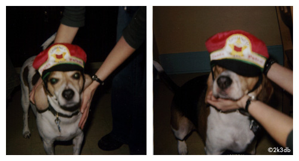

ᠡᠢᠰᠢ ᠪᠡᠨ ᠰᠢᠷᠲᠡᠵᠦ

ᠶᠢᠨ ᠰᠤᠷᠪᠤᠯᠵᠢ
ᠳᠡᠭᠡᠭᠰᠢᠯᠡᠭᠦᠯᠵᠦ᠂ ᠬᠤᠳᠠᠯᠳᠤᠨ ᠠᠪᠬᠤ ᠬᠢᠵᠠᠭᠠᠷ ᠲᠣᠭᠠ ᠶᠢ ᠲᠣᠭᠲᠠᠭᠠᠭᠰᠠᠨ ᠠᠴᠠ ᠲᠣᠰᠬᠣᠨ ᠤ ᠠᠷᠠᠳ ᠲᠦᠯᠡᠭᠡ ᠰᠢᠲᠠᠭᠠᠬᠤ ᠪᠣᠯᠵᠤ᠂ ᠠᠮᠤᠷ ᠲᠦᠪᠰᠢᠨ ᠦ ᠳᠠᠯᠳᠠ ᠭᠡᠮ ᠣᠷᠣᠰᠢᠵᠤ᠂
ᠡᠨᠡ ᠬᠡᠯᠡ ᠪᠡᠷ ᠳᠠᠭᠤᠯᠠᠵᠤ᠂ ᠡᠨᠡ ᠬᠡᠯᠡ ᠪᠡᠷ ᠤᠬᠢᠯᠠᠵᠤ ᠡᠨᠡ ᠬᠡᠯᠡ ᠪᠡᠷ ᠤᠨᠠᠵᠤ᠂ ᠡᠨᠡ ᠬᠡᠯᠡ ᠪᠡᠷ ᠠᠯᠳᠠᠵᠤ ᠡᠴᠢᠭᠡ ᠴᠢᠨᠢ ᠦᠪᠡᠷ ᠦᠨ ᠢᠶᠡᠨ ᠬᠦᠰᠢᠶᠡ ᠶᠢ ᠦᠪᠡᠷ ᠢᠶᠡᠨ ᠡᠨᠡ ᠮᠣᠩᠭᠣᠯ ᠬᠡᠯᠡ ᠪᠡᠷ ᠪᠣᠰᠬᠠᠭᠰᠠᠨ ᠶᠤᠮ ᠰᠢᠦ
ᠬᠢᠵᠦ ᠪᠣᠯᠬᠤ ᠦᠭᠡᠢ ᠦᠬᠦᠵᠦ ᠬᠠᠭᠠᠴᠠᠨᠠ ᠭᠡᠳᠡᠭ᠃ 2. ᠲᠤᠭᠤᠭᠠ ᠪᠠᠨ ᠬᠡᠯᠲᠡᠭᠡᠢ ᠲᠠᠯᠪᠢᠵᠤ ᠪᠣᠯᠬᠤ ᠦᠭᠡᠢ᠂ ᠬᠡᠰᠢᠭ ᠪᠤᠶᠠᠨ ᠨᠢ ᠬᠠᠵᠠᠢᠨᠠ ᠭᠡᠳᠡᠭ᠃ 3. ᠬᠤᠳᠳᠤᠭ ᠤᠨ ᠤᠰᠤᠨ
ᠮᠣᠩᠭᠣᠯ ᠬᠡᠯᠡ ᠦᠰᠦᠭ ᠰᠤᠷᠤᠭᠰᠠᠨ ᠬᠦᠦ ᠶ᠋ᠢᠨ ᠰᠦᠯᠳᠡ ᠨᠢ ᠳᠠᠩᠳᠠ ᠵᠣᠭᠰᠣᠭᠠ ᠪᠠᠶ᠋ᠢᠳᠠᠭ᠂ ᠮᠣᠩᠭᠣᠯ ᠦᠰᠦᠭ ᠶ᠋ᠢᠡᠷ ᠪᠢᠴᠢᠭᠰᠡᠨ ᠬᠡᠦᠬᠡᠨ ᠦ ᠬᠡᠶ᠋ᠢᠮᠦᠷᠢ ᠨᠢ ᠳᠠᠩᠳᠠ ᠪᠣᠰᠤᠭᠠ ᠪᠠᠶ᠋ᠢᠳᠠᠭ᠃
ᠪᠢ ᠤᠯᠠᠨ ᠪᠤᠷᠬᠠᠳ ᠢ ᠥᠭᠡᠳᠡ ᠡᠴᠡ ᠨᠢ ᠬᠠᠷᠠᠵᠤ ᠤᠳᠠᠭᠠᠨ ᠰᠠᠭᠤᠭᠰᠠᠨ ᠨᠢᠭᠡ ᠴᠤ ᠨᠠᠳᠠ ᠤᠷᠤᠭᠤ ᠬᠠᠷᠠᠵᠤ ᠢᠨᠢᠶᠡᠬᠦ ᠦᠭᠡᠢ ᠲᠡᠭᠡᠭ᠍ᠰᠡᠨ ᠮᠢᠨᠦ ᠡᠵᠢ ᠯᠡ ᠢᠨᠢᠶᠡᠳᠡᠭ ᠶᠤᠮ ᠪᠠᠢᠨᠠ
ᠬᠥᠭᠵᠢᠭᠦᠯᠬᠦ ᠴᠢᠬᠤᠯᠠ ᠬᠡᠷᠡᠭᠰᠡᠯ ᠮᠥᠨ ᠃ ᠦᠨᠳᠦᠰᠦᠲᠡᠨ ᠦ ᠬᠡᠯᠡ ᠪᠢᠴᠢᠭ ᠨᠢ ᠲᠤᠬᠠᠢ ᠶᠢᠨ ᠦᠨᠳᠦᠰᠦᠲᠡᠨ ᠦ ᠰᠣᠶᠣᠯ ᠤᠨ ᠣᠨᠴᠠᠯᠢᠭ ᠢ ᠬᠠᠳᠠᠭᠠᠯᠠᠵᠤ ᠂ ᠤᠯᠠᠮᠵᠢᠯᠠᠨ ᠵᠠᠯᠭᠠᠮᠵᠢᠯᠠᠬᠤ
᠄ 《 ᠲᠣᠭᠯᠠᠭᠠᠮ ᠴᠤ ᠦᠭᠡᠢ ᠂ ᠨᠡᠭᠡᠷᠡᠨ ᠳᠡᠭᠡᠭᠰᠢ ᠪᠡᠨ ᠰᠠᠭᠤᠭᠠᠴᠢ ᠃ ᠭᠡᠷ ᠦᠨ ᠡᠵᠡᠨ ᠬᠥᠮᠦᠨ ᠢᠩᠭᠢᠵᠦ ᠡᠭᠦᠳᠡᠨ ᠦ ᠰᠢᠬᠠᠮ ᠰᠠᠭᠤᠬᠤ ᠨᠢ ᠡᠪ ᠦᠭᠡᠢ ᠰᠢᠦ ᠳ᠋ᠠ》 ᠭᠡᠪᠡ᠃ ᠬᠡᠦᠬᠡᠨ
ᠳ᠋ᠠ᠂ ᠵᠦᠭᠡᠷ ᠨᠢᠭᠡ ᠬᠦᠳᠡᠭᠡ ᠶᠢᠨ ᠪᠤᠷᠤ ᠦᠬᠢᠨ᠃ ᠦᠩᠭᠡ ᠲᠠᠢ ᠨᠢᠭᠡ ᠵᠠᠬᠠ ᠬᠤᠪᠴᠠᠰᠤ ᠦᠭᠡᠢ᠂ ᠦᠰᠦ ᠭᠡᠵᠢᠭᠡ ᠪᠡᠨ ᠶᠠᠩᠵᠤᠯᠠᠬᠤ ᠶᠢ ᠴᠤ ᠮᠡᠳᠡᠬᠦ ᠦᠭᠡᠢ᠃ ᠠᠪᠤ ᠨᠢ ᠵᠡᠮᠳᠡᠭ᠂